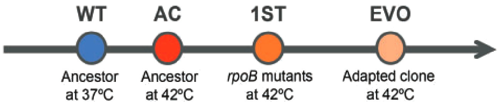
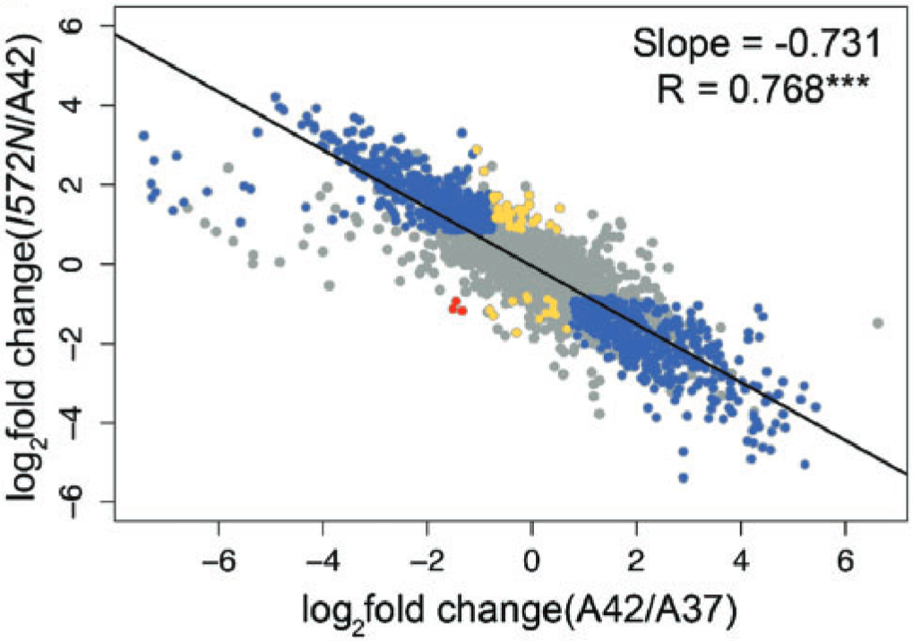
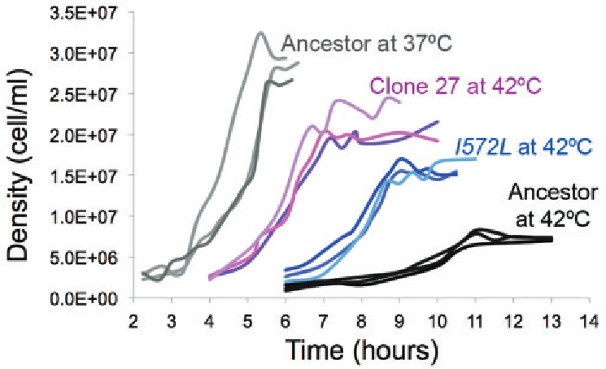

![]()
Some Context
A few months ago I applied to the Fellows Program of the Society of Molecular Biology and Evolution. As part of the application, I had to write a short article highlighting a paper, similar to the society journal’s Molecular Biology and Evolution and Genome Biology and Evolution Highlights.1 While I was not selected to be one of the three 2025 fellows—those that did look very deserving—I nevertheless wanted to share what I wrote. I chose to highlight Rodríguez-Verdugo et al. 2016 MBE (1), one of the most important references for my doctoral research.
The Highlight
Temperature is a complex stressor which affects many cellular processes, enzymatic reactions or molecular conformations for example, at the same time. Adaptation to some external stresses can occur through genetic changes that impart novel functions. Temperature on the other hand has been shown to at least in some cases lead to the selection of mutations that restore homeostasis—in other words, restore cellular processes towards an unstressed state. However, at the time of publication of Rodríguez-Verdugo et al. (2016) in Molecular Biology and Evolution (1), it was unclear how often adaptation took the novelty or restoration routes. Furthermore, we lacked understanding of the mechanisms and in particular the timing of genetic changes and the corresponding phenotypic changes over the course of adaptation to an external stress. To address these knowledge gaps, Rodríguez-Verdugo and colleagues investigated high-temperature adaptation in Escherichia coli (1). In an earlier evolution experiment, the authors had allowed 115 E. coli populations to adapt to growth at 42.2°C, a highly stressful temperature close to the bacterium’s upper thermal limit, over the course of 2000 generations (2). Genome sequencing revealed a high degree of parallel genome evolution, meaning that mutations in the same genes, operons, and functional complexes were selected for repeatedly across independent populations. The gene encoding the β subunit of the RNA polymerase (RNAP), rpoB, was the most frequent target of selected mutations with 76% of sequenced clones carrying a mutant rpoB allele. Three rpoB mutations were particularly interesting because they occurred early in the evolution experiment and conferred large fitness effects. These non-synonymous substitutions were located in the active site of the RNAP, rpoB codon 572 specifically, and were thus likely to influence transcription at a global scale, potentially kick-starting high-temperature adaptation.

First, Rodríguez-Verdugo and colleagues characterised the ancestral strain’s growth and gene expression at 37°C (prestressed) and at highly stressful 42°C (Figure 1). Not only did the ancestor grow substantially slower and to lower densities at 42°C, it also differentially expressed 41% of its 4204 genes, indicating severe heat stress. While many stress-related genes were upregulated, genes involved in growth-related processes were downregulated. Next, the authors reconstructed the three potential first-step mutations in the ancestral strain: rpoB I572F, I572L, and I572N. Indeed, the mutant strains showed faster growth and higher maximum densities compared to the ancestor at 42°C. RNA-Seq revealed that the mutant strains differentially expressed hundreds to over thousand (598–1360) genes compared to the ancestor at 42°C, indicating that non-synonymous substitutions in the RNAP active site lead to massive pleiotropic shifts in gene expression (Figure 2). Plotting log₂-fold changes (LFCs) of the mutants compared to the ancestor at 42°C against the of LFCs the ancestor at 42°C compared to 37°C, revealed significant negative correlations (Figure 2). This indicates that the first-step mutations restored gene expression towards the prestressed state (ancestor at 37°C). Expressed genes were then further categorised as restored (LFCs reversed after adaptation), reinforced (LFCs with same sign), unrestored (unchanged by adaptation), or novel (evolved differential expression). Out of the genes that were differentially expressed either by acclimatisation or adaptation, 63–68% were restored, ≤ 3% showed novel differential expression, and < 1% (0–3 genes) experienced a reinforced LFC after adaptation (Figure 2). Surprisingly, similar growth and gene expression phenotypes to those of the codon 572 mutations were induced by the rpoB I966S mutation, located outside of the RNAP active site.

Finally, (1) studied two clones from the evolution experiment which both carried the rpoB I572L mutation as well as non-overlapping sets of ~10 mutations. These additional mutations allowed the high-temperature adapted clones to grow faster and one of the clones to reach higher densities, though neither had regained the fitness of the ancestor at 37°C (Figure 3). Interestingly, very few genes showed differences in gene expression compared to the transcriptome of the rpoB I572L strain, indicating that the rpoB mutations were still responsible for most of the differential gene expression.

Temperature being a complex stressor, it might seem surprising that a single mutation could confer a large fitness benefit under heat stress. But because of their ability to directly or indirectly influence the expression of hundreds to thousands of genes, transcriptional regulators such as rpoB are in a prime position to do so. While these large scale expression changes provide a net benefit and bring the transcriptome closer to an unstressed state, many of the individual gene expression changes are still deleterious. Thus, over time further mutations that ameliorate the negative impacts of the first-step mutations are selected for. (1) showed that this two-step process occurs frequently in E. coli populations adapting to heat stress. Together with other work, this study provides evidence that functional novelty is not the only evolutionary path available in a changing environment. However, it is still unclear whether restoration of homeostasis alone has the same evolutionary potential as evolutionary innovation in the long term.
References
Footnotes
The target audience of these highlight articles are readers of MBE and GBE who might not be experts in the specific field of the paper↩︎
Reuse
Citation
@online{ebert2025,
author = {Ebert, Gleb G.},
title = {Leap, {Then} {Refine—a} {Two-Step} {Model} of {Adaptation}},
date = {2025-12-08},
url = {https://www.gl-eb.me/blog/posts/2025-12-08_rodriguez-verdugo/},
langid = {en}
}